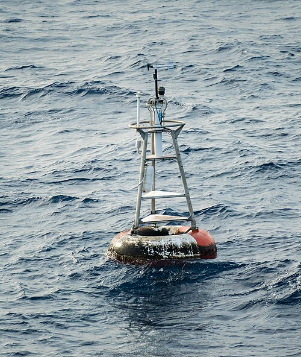
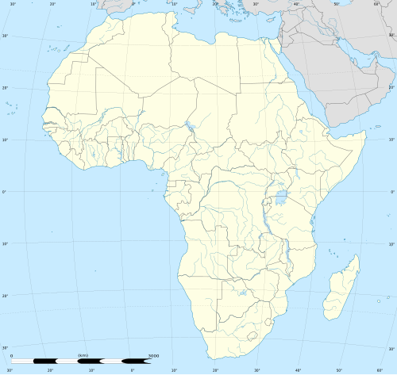

| Donate | Create Account | Login |
Article Talk Read Edit View history Tools
From Wikipedia, the free encyclopedia
| Null Island |
|---|
|  |
| The weather buoy moored at the coordinates of Null Island, in the Gulf of Guinea at 0°N 0°E |
|  |
| The point of intersection of the prime meridian and the equator, in the Gulf of Guinea |
Null Island is the location at zero degrees latitude and zero degrees longitude (0°N 0°E), i.e., where the prime meridian and the equator intersect. Since there is no landmass located at these coordinates, it is not an actual island. The name is often used in mapping software as a placeholder to help find and correct database entries that have erroneously been assigned the coordinates 0,0. Although "Null Island" started as a joke within the geospatial community, it has become a useful means of addressing a recurring issue in geographic information science.
The point on the Earth's surface defined as Null Island is located in
international waters
in the
Atlantic Ocean, roughly 600 kilometres (320 nmi) off the coast of
West Africa, in
the
Gulf of Guinea.[2] A
weather buoy,
named the Soul buoy after the
soul music genre,
was moored at the location.
The nearest land to Null Island is a small islet 570 km (354 mi; 307.8
nmi) to the north (4°45′30″N 1°58′33″W) that is part of
Ghana. The nearest
point on the mainland is Achowa Point[4] between
Akwidaa and
Dixcove, both in
Ghana.
The depth of the seabed beneath the Soul buoy is around 4,940 metres
(16,210 ft).
In terms of computing and placename databases, the coordinates for Null
Island were added to the
Natural Earth
public domain map dataset[7][8][9] c. 2010–2011, after which the term
came into wide use (although there is evidence of it being used
previously).[10][user-generated source] Since then, the "island" has, through fiction, been given a
geography, history, and flag.[2] Natural Earth describes the entity as a
"1 meter square island" (11 sq ft) with "scale rank 100, indicating it
should never be shown in mapping".[7] The name "Null" refers to the two
zero coordinates, as
null
values (indicating an absence of data) are often coerced to a value of 0
when converted to an integer context or "no-nulls allowed"
context.
The location is used by mapping systems to
trap errors.[8] Such errors arise, for example, where an image artifact is
erroneously associated to the location by software which cannot
attribute a geoposition, and instead associates a latitude and longitude
of "Null,Null" or "0,0".[11] As reported in January 2018 by
Bellingcat, other
data mapped to the location include activity events from the
Strava
fitness-tracking app, apparently mapped to the location due to users
entering "0,0" coordinates to disguise their real locations.
The buoy ("Station 13010 – Soul") was part of the
PIRATA
system, a set of 17 buoys installed in the tropical Atlantic Ocean since
1997 by the United States, France, and Brazil.[13] Like the other buoys
in the system, it was named after a musical genre.[3] It was an
Autonomous Temperature Line Acquisition System (ATLAS) buoy that was
conical in shape and 3.8 metres (12 ft) high. It was anchored by a cable
to the seabed.
The buoy disappeared less than a year after its installation, and was
replaced in 1998.[3] The buoy was decommissioned in March 2021.